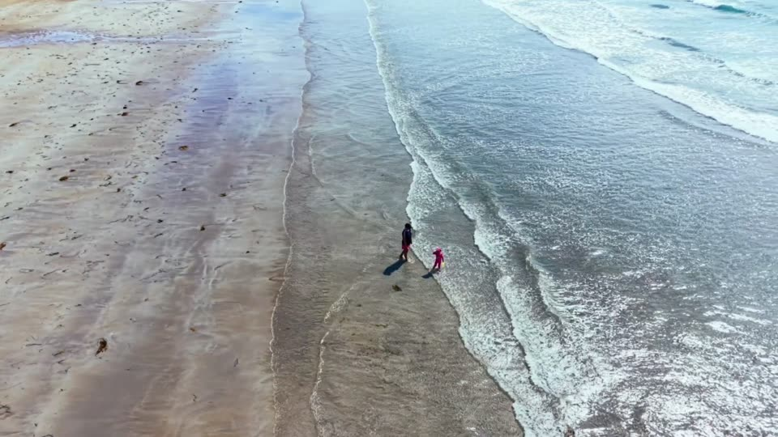
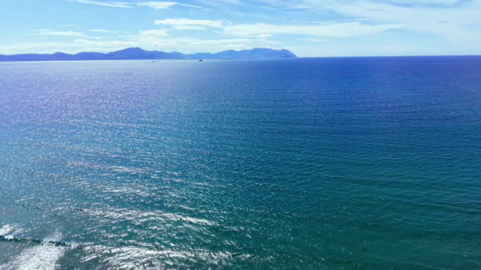
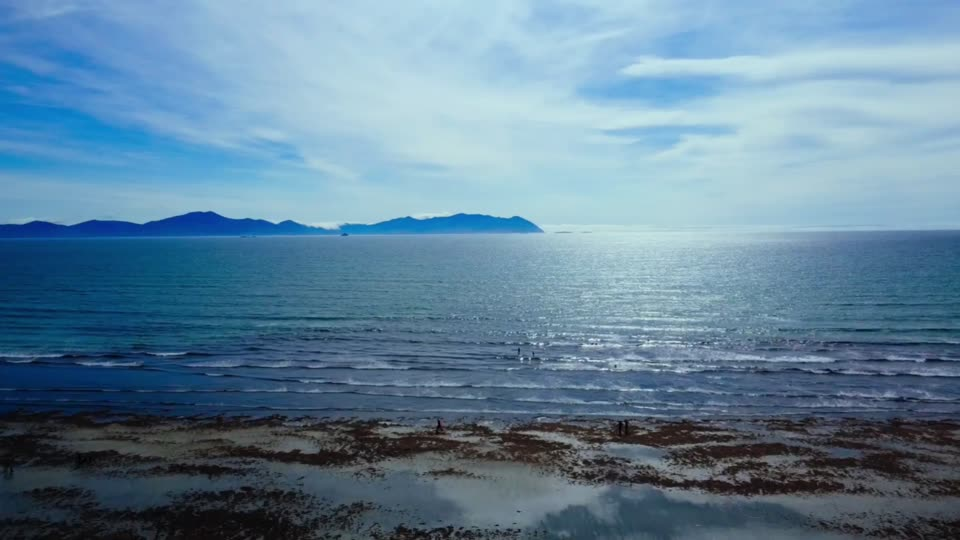
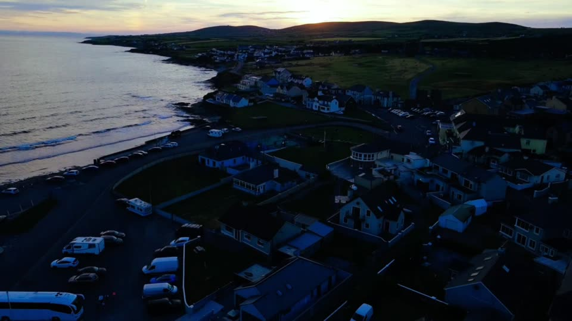

52.39° N, 9.83° W
Ballyheigue
Three kilometres of Blue Flag sand, Atlantic sunsets and a proper Kerry welcome.
Start exploringNorth Kerry's seaside village, on the edge of the Wild Atlantic Way.
Ballyheigue sits on the north-west edge of Tralee Bay, where a long golden beach runs south towards Banna Strand and the land rises north into Kerry Head.
Come for a swim, a surf or a long walk on the sand. Stay for a pint in the village, a round of golf beside a castle and a sunset that turns the whole bay gold. Don't rush through on the way somewhere else. Give it a day or two.
- Blue Flag beach
- 3 km
- From Tralee
- 25 min
- From Shannon Airport
- 1 h 20
Plan your days
Four ways into Ballyheigue, whatever the weather is doing.

The beach
Swimming, surfing and the evening walk out to Black Rock.

Kerry Head
Cliffs, quiet roads and 2,000-year-old forts on the coastal loop.

The Wild Atlantic Way
Banna, Fenit, Ballybunion and Dingle, all within reach.

Eat, drink, stay
Village pubs with music, a seaside café and beds by the beach.
Named Ireland's best beach.
Ballyheigue Beach topped the Irish list in the Condé Nast Traveller Readers' Choice Awards 2026.
See it from the airStay for sunset.
The sun drops into the Atlantic behind Kerry Head. In midsummer it doesn't set until after 10pm, so there's time for dinner first.